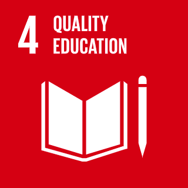
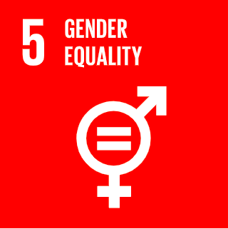

The UN SDGs are a set of 17 goals made by the United Nations, with the hope that they will be acheived by 2030. The goals are meant to make the world more sustainable. This would be acheived by doing things such as reducing pollution, or giving everyone access to quality education. A full list of the UN SDGs can be found here -> List of all UN SDGs
UN SDG 4 is "Ensure inclusive and quality education for all and promote lifelong learning." This goal is focused around giving every person around the world access to quality education to allow them to be able to get a job which will give them financial stability. Many of the subgoals focus on giving everyone access to education, an example would be making primary and secondary education free around the world. _________________________________________________________ 
UN SDG 5 is "Achieve gender equality and empower all women and girls. " This would be achieved by giving all girls and women equal access to education, health care and decent work, as well as giving equal representation in political and economical decision making. This is important as gender equality is considered to be a fundemental human right. Acheiving this goal would also be the fundemental basis for a peaceful and prosporus world. ___________________________________________________________ 
There is a strong corelation between the education level of women and their gender equality. An example of this is that as the women started to get the same education level as men, the amount of women in national parliments also rose with it.